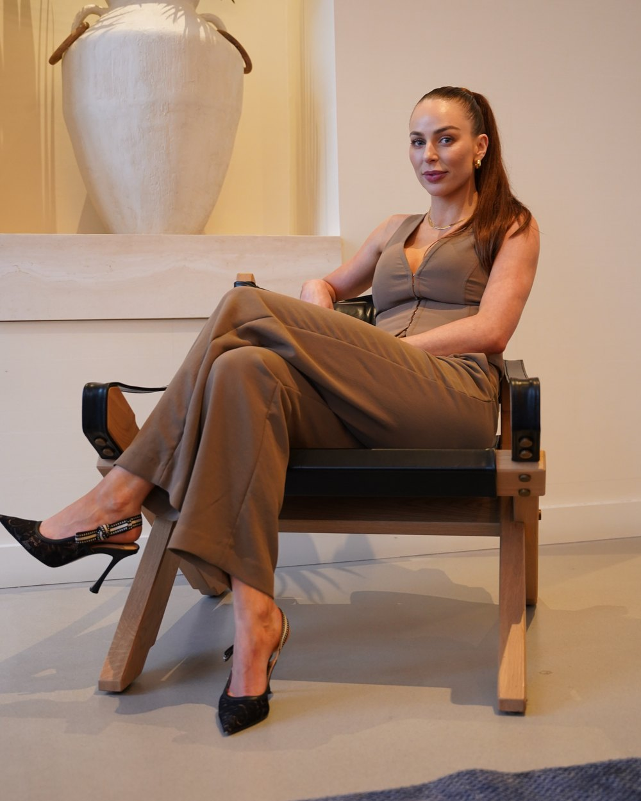
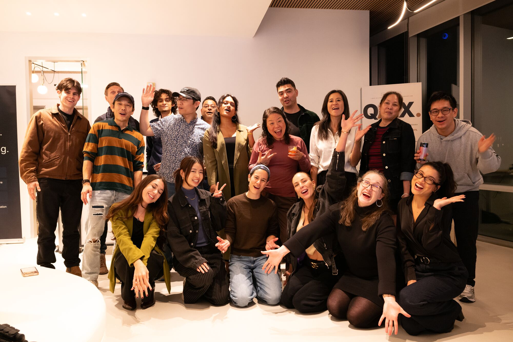
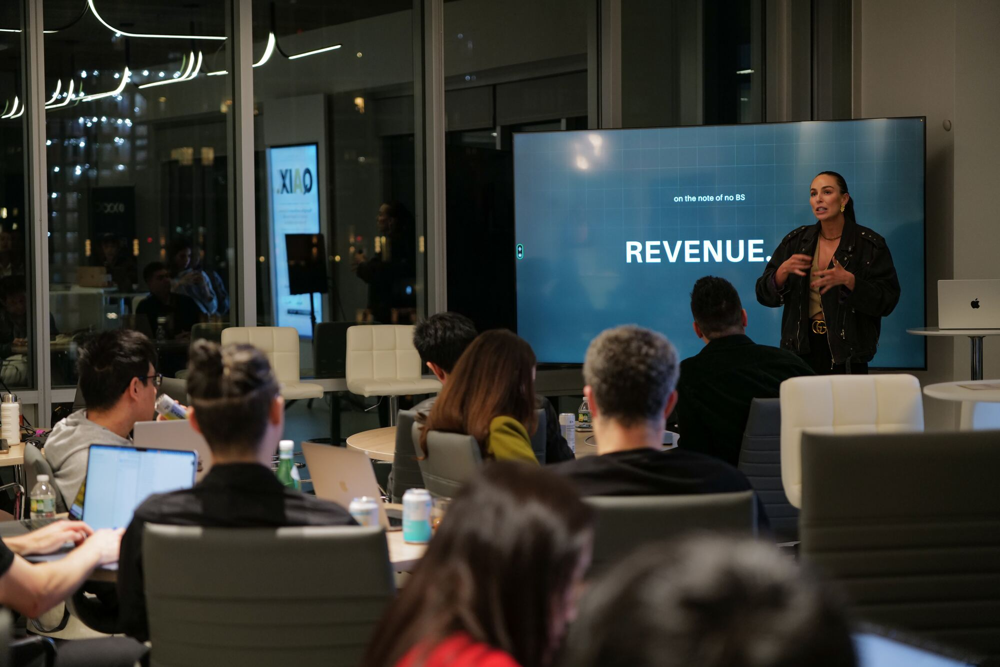
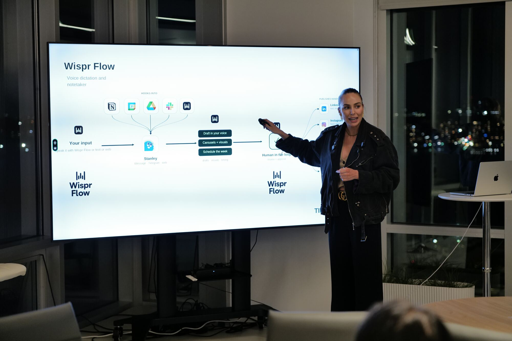

Busy. Tired. Still at $0.
- logo_v7_FINAL_final.pngWeek 6
- Redesign website (again)Week 4
- Rebuild Notion dashboardWeek 3
- Compare 14 AI toolsWeek 2
- Buy another courseToday
Build your AI Operating System & Sales Engine in 5 weeks.

Cohort 1 win
10 hrs → 4 hrs
a week on content, Maria
Cohort 1 win
10 hrs → 2 hrs
a working day, Trish
Trusted by founders & operators from
20,000+
AI agents built on our mentors' platforms
5weeks
From over-planning to an execution system
Founder-first
Revenue focused. No jargon, no tool tours.
Real results members posted during the cohort, in their own words.
Most founders lose months polishing logos, websites and Notion setups. It feels like progress. It isn't. Revenue comes from conversations, not colour palettes.
Stop
Rebranding, redesigning, re-organising.
Start
10 sales conversations a week. Minimum.
Delegate
Everything else to AI and interns.
Every week ends with something shipped, not just something learned. Live, and recorded.
Live hot seats on real businesses. Cut everything that isn't making you money.
Replace tool confusion with one system that runs your week.
Tell the story that sells, then let AI multiply it.
Turn repeat work into workflows that run without you.
Brief people the way you brief agents. Hand off execution, keep the quality.
Live sessions · recorded · limited seats
What founders, investors and operators say after a room with Ella.
People and AI working side by side, not one replacing the other.
You, the founder
Strategy · Sales · Decisions
Your offers, voice, SOPs and years of ChatGPT memory in one system every model and every intern can read.
Brief interns the way you brief agents. Clear context, clear expectations, productive from week one.
A real feedback process (AI pre-review plus founder spot-checks), so work stops landing back on your desk.
Revenue & time back
More calls · More closes · Fewer hours
Ask your burning question to an a16z-backed founder, not sit through jargon.
Founder & CEO, Atrios
Backed by a16z. First company passed $50M. Atrios: zero to $1M run rate in 4 months.
Keynote Speaker, Brave New Story
TED Facilitator. Narrative strategy & executive advisory.
I've always been an entrepreneur. I exited my first company in Australia in 2021, moved to the US, and built a network that connected founders with investors.
I love being in a room with ambitious people. So I started running live build sessions. They grew into a community, and the feedback was the same every time: “This is the first time AI clicked.”
The Accelerator is the execution version of that. Five weeks. Tactical builds. Live Q&A. No AI jargon allowed. Taught by founders who are building right now.
You don't learn this alone. You learn it next to people who push you. Let's build, break, fix and sell together.
Ella Molony Cook
Founder, Time Rich
NYC live build · November 2026



For you
Not for you
Less than one freelancer invoice, for a system that keeps paying you back.
5-week live cohort for founders.
Cohort starts in
76
Days
18
Hours
39
Mins
20
Secs
Everything included
The Accelerator
Live sessions, all hands on: every build broken down step by step.
The Arena
Hot-seat coaching in almost every session, on your business.
Expert Q&A rooms
Ask venture-backed founders, creators and investors directly.
The Network
A room of founders, coaches and creators, and who to call.
Your AI Operating System
The Notion OS, templates and community are yours to keep.
Partner perks
6 months of Stanley (AI head of content) + 6 months of Wispr Flow Pro.
The math: one extra client (or 5 hours a week handed to an intern) pays for this many times over.
Still unsure? Ask us anything before you join.
No. We don't teach AI for the sake of it. We use AI and interns as leverage so you sell more, ship faster and get your time back. Every session ends with something built.
No. If you can write a clear brief for a new hire, you already have the skill that matters most.
No. AI takes the repetitive work off their plate so they've got more time for what actually needs a human: judgement, creativity, relationships.
Yes. Clear context, set expectations, a real feedback process that works whether you're briefing an agent or an intern. It's what stops everything landing back on your desk.
Whichever one you'll actually open: ChatGPT, Claude, Perplexity, or something that lives in your text messages. Each model has a different superpower and we match it to what your business does. What you won't do is start over every time you switch.
No. All of that memory is an asset. We move it into a shared Second Brain your other models and your interns can read too, so quality doesn't drop when you switch tools.
Yes. Some of the best people in the cohort are building alongside something else. That's the whole point of a system: it has to hold when your week doesn't.
The next cohort starts February 1 and runs for 5 weeks, live and recorded. It's $557. Seats are limited so every founder gets real feedback.
Five weeks from now you could be selling daily, with AI and interns running the rest.